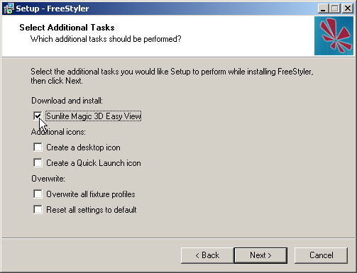

Here you will find some answers for the frequently asked questions. If you can't find any answers of your problem try to read the help subject in FreeStyler. If you still have some issues/questions, ask them at the Freestyler support forum
A: “output thread” error comes when FreeStyler can't find the USB interface. Make sure you have selected the right interface in FreeStyler Setup and chosen the right COM-port. If you don't know which COM-port your interface is connected to, open the Device Manger and check it. Set the right COM-port in FreeStyler Setup and restart the program.
To check or change the COM-port associated with your interface follow this procedure.
All should be now working.
(I will do a version soon)
(still has to be added)
A: This is not a bug. In the latest versions the blue ball don't move.
A: This icon indicates that a manual override is active, click on it to disable the manual override.
Learn more about this at: The Override systems in freestyler or the Blue triangle
A: Magic 3D Easy View is either not installed or not installed in the FreeStyler folder.
When you install FreeStyler make sure you set the check mark at “Sunlite Magic 3D Easy View”, otherwise Magic 3D Easy View does not get installed.
If you forgot to set the checkmark run the install again, click that check mark and make sure you have not set the check marks for “Overwite all fixture profiles” and “Reset all settings to default”. This way nothing will happen with your fixtures and setting. Only the “3D” button would be clickable in FreeStyler.

A: Sorry you cannot do that. FreeStyler fixtures are not compatible with the visualiser and vice-versa. Same would apply if you was using Capture or WYSIWYG visualisers, so you need two types of fixture file to be created, one for the control program (FreeStyler) and one for the visualiser.
So you need to use the FixtureCreator to create you fixture file for FreeStyler if it don't exist. also, it is a good idea to check that the fixtures in the visualizer and FreeStyler is identical (use different attributes on the same DMX channels).
A1: FreeStyler may not send out DMX:
Make sure you have selected your real interface or the “Virtual Interface” in the FreeStyler setup:
[Setup>FreeStyler Setup>Interface Setup>Controller].
If you did not do that FreeStyler will not send out any DMX data to Magic 3D Easy View.
A2: You have not opened/started the Magic 3D Easy View program from FreeStyler:
Press the “3D” button in the FreeStyler toolbar to start the Magic 3D Easy View program.
If you have opened the program by not using the “3D” icon on the FreeStyler toolbar then FreeStyler is not connected the Magic 3D Easy View.
{kind=link}